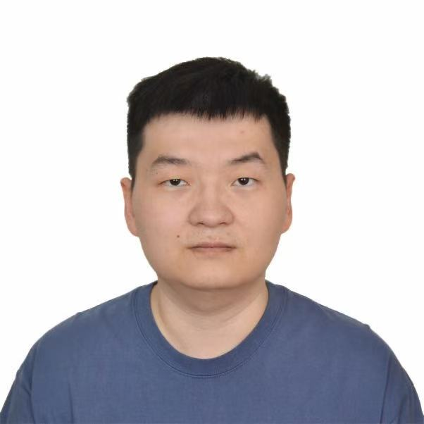

Doctor of Philosophy
- Research topic: Performance Optimization for Data-Intensive Computing Systems.
- Advisor: Feng-hao Liu.
Ph.D. Student · Washington State University
Researcher and software engineer focused on performance optimization for data-intensive computing systems.
